whole-picture edit
2 rolls- Round 3's method again, with the new wing and blade wording. The control everything else is measured against
Input(s)W1 starting image + r4-w1-ff prompt
What we need from you
Sign-off on the plan and the cap. Read the full ask ↓
Planned spend against the round cap$3.58 / $5.00
Both wallpapers need the same two things: the scythe blade reshaped to the agreed profile, and the wing tops cleaned up so nothing rises above the wing's top edge. W1 additionally has a third wing to remove, a doubled blade, and a bowed shaft; W2 has a hand still holding a loose dagger.
Round 3 tried to do this with whole-picture edits and failed the same way every time: the model repainted far more of the picture than it was asked to, so an edit that landed came with a redrawn face and background. The one repair that stayed put was a small cropped patch pasted back. So this round is two questions at once — which image ends up best, and which editing method we should be using from now on.
Every arm starts from one of the two round 3 picks and aims at the same target: the agreed blade shape, and the wing construction now in the spec. Except where a row says otherwise, the editor is flash31 at 2K in batch mode, and each arm gets two rolls, because which features land is a per-roll lottery.
Input(s)W1 starting image + r4-w1-ff prompt
Input(s)W1 starting image + r4-w1-sr prompt
Input(s)cut-out wing area + r4-w1-cropwing prompt
Input(s)cut-out blade area + shape diagram + r4-w1-cropblade prompt
Input(s)painted-out wing area + r4-w1-blank prompt
Input(s)best assembled W1 image + r4-w1-clean prompt
Input(s)W2 starting image + r4-w2-ff prompt
Input(s)W2 starting image + r4-w2-sr prompt
Input(s)cut-out blade area + shape diagram + r4-w2-cropblade prompt
Input(s)cut-out wing-top area + r4-w2-cropwing prompt
Input(s)W2 starting image + r4-w2-ff prompt, unchanged (riverflow25)
Input(s)r4-fresh prompt, text only (gptimage2, riverflow25)
21 rolls total — 12 choices, 2 + 2 + 2 + 2 + 2 + 1 + 2 + 2 + 2 + 1 + 1 + 2
That is 21 paid calls. Three more things run for free and are not choices: the hand repair (round 3's proven patch recipe, run on the winner only, last); compositing patches back into their originals; and a set of deterministic comparisons between existing images that costs nothing to try.
The hand is fixed last, on the winner only. Any whole-picture pass repaints the hand, so repairing it first would throw that work away.
Everything that goes in, grouped by the choice it belongs to. Click any image to zoom; open a prompt to read the exact text this round spends against. Crop sets show both the cut overview and every exact output crop.
Round 3's method again, with the new wing and blade wording. The control every other arm is measured against.
scythe-valkyrie-r3-w1-rem-2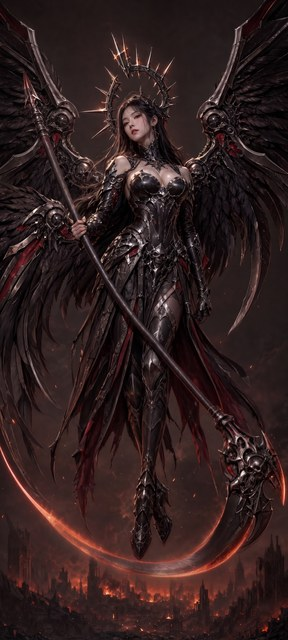
projects/bluemneme/scythe-valkyrie/prompts/r4-w1-ff.txt
ATTACHED IMAGE One image is attached. IMAGE 1 is a finished photorealistic wallpaper artwork of an angel-of-death valkyrie. Your task is a SURGICAL EDIT: apply ONLY the corrections listed below and leave everything else untouched. EDIT — REMOVE THE THIRD WING There are three wing masses. Below and behind the correct upper wing on the VIEWER'S LEFT, a third, separate wing sweeps downward and to the left, rooted lower on her back. Remove that lower-left wing completely, restoring the background and any cloth behind it. The figure must end with exactly TWO wings, one on the viewer's left and one on the viewer's right. EDIT — ONE BLADE ONLY The scythe carries two nested crescent blades. Remove the outer arc entirely and keep one single continuous blade, restoring the background where the removed arc was. EDIT — BLADE SHAPE Reshape the blade into a shallow reaper crescent. It leaves the ornate head at a RIGHT ANGLE to the shaft, carries outward and slightly downward, then flattens and rises gently so the tip finishes just above horizontal. The whole arc turns only about 50 degrees end to end — a long shallow curve, NOT a hook, NOT a half circle, and it must never curl back up toward a wing. Thick at the head, tapering evenly to a single sharp tip. Keep the blade IN FRONT of the character. EDIT — STRAIGHT SHAFT The shaft is bowed. Redraw it dead straight from end to end — one rigid cylindrical pole with no curve or kink — keeping its existing angle, length, thickness, and armoured surface detail. PRESERVE — THE TWO MAIN WINGS The upper wings are correct and must be reproduced exactly as they are. Each is an articulated mechanical limb: an armoured shoulder hub, then a chain of armoured segments linked by visible mechanical joints, whose upper contour forms the wing's top edge with nothing rising above it and the feathers hanging below and behind. Do not redesign, re-pose, resize, or re-render them. PRESERVATION Apart from the edits listed above, reproduce IMAGE 1 EXACTLY: the same character, face, expression, hair, halo crown, armour and ornament detail, pose, background, lighting, colour grading, and level of detail, at the same framing on the same tall canvas shape as IMAGE 1. Do not restyle, re-light, sharpen, or reinterpret anything. Add no new objects, no extra glow, and no text, labels, logos, or watermarks.
Describes the whole picture wanted rather than a list of corrections, on the theory that the model repaints everything regardless.
scythe-valkyrie-r3-w1-rem-2projects/bluemneme/scythe-valkyrie/prompts/r4-w1-sr.txt
ATTACHED IMAGE One image is attached. IMAGE 1 is a finished photorealistic wallpaper artwork of an angel-of-death valkyrie. Redraw this same picture at the same quality. Hold everything named under HOLD CONSTANT exactly as it is, and build the parts named under BUILD to the description given. This is not a light retouch — you are painting the whole picture again — so the HOLD CONSTANT list is what makes it the same artwork. BUILD — WINGS Exactly two wings, one on the viewer's left and one on the viewer's right, and no third wing anywhere. Each is an articulated mechanical limb: an armoured shoulder hub, then a chain of armoured segments linked by visible mechanical joints — upper arm, forearm, and a long outer hand section, like the skeleton of a real bird's wing. The upper contour of that limb chain is the wing's top edge, continuous but bending visibly at each joint, and NOTHING rises above it. Feathers, wing-blades and spikes hang below and behind the limb only. BUILD — SCYTHE One blade only, never two. It leaves the ornate head at a RIGHT ANGLE to the shaft, carries outward and slightly downward, then flattens and rises gently so the tip finishes just above horizontal — the whole arc turning only about 50 degrees end to end. A long shallow crescent, NOT a hook, NOT a half circle, never curling back up into a wing. Visible background separates the blade from both wings along its whole length. The shaft is dead straight, one rigid cylindrical pole with no curve or kink. The blade passes in front of the character. HOLD CONSTANT The same woman, with the same face, expression, hair and skin. The same spiked halo crown. The same armour, its ornament, and the same cloth and skirt. The same floating pose and the same camera. The same background scene, the same lighting and the same colour grading. The same tall canvas shape and framing. No new objects, no extra glow, no text, labels, logos or watermarks.
Cuts out just the third-wing area, repairs it, and pastes it back. Nothing outside the patch can change.
scythe-valkyrie-r4-w1-wing-crop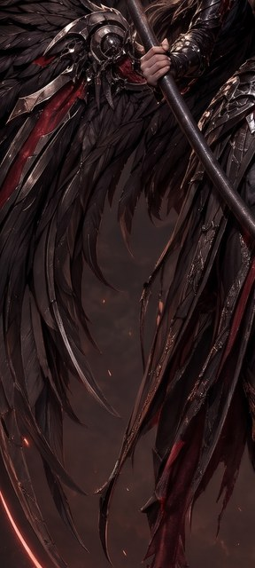
projects/bluemneme/scythe-valkyrie/prompts/r4-w1-cropwing.txt
ATTACHED IMAGE One image is attached. IMAGE 1 is a CROP from a larger finished photorealistic artwork, showing the left-hand wing area of a winged figure against a dark sky. Your task is a SURGICAL EDIT: apply ONLY the corrections listed below and leave everything else untouched. EDIT — REMOVE THE THIRD WING There are three wing masses. Below and behind the correct upper wing on the VIEWER'S LEFT, a third, separate wing sweeps downward and to the left, rooted lower on her back. Remove that lower-left wing completely, restoring the background and any cloth behind it. The figure must end with exactly TWO wings, one on the viewer's left and one on the viewer's right. PRESERVE — THE TWO MAIN WINGS The upper wings are correct and must be reproduced exactly as they are. Each is an articulated mechanical limb: an armoured shoulder hub, then a chain of armoured segments linked by visible mechanical joints, whose upper contour forms the wing's top edge with nothing rising above it and the feathers hanging below and behind. Do not redesign, re-pose, resize, or re-render them. PRESERVATION Apart from that removal, reproduce IMAGE 1 EXACTLY: the same wing, sky, cloth and lighting, at the same framing on the same canvas shape — do not zoom, crop further, or extend the scene. Add no new objects and no text, labels, logos, or watermarks.
The same, on a much larger patch, with the agreed blade shape attached as a diagram to match.
scythe-valkyrie-r4-w1-blade-crop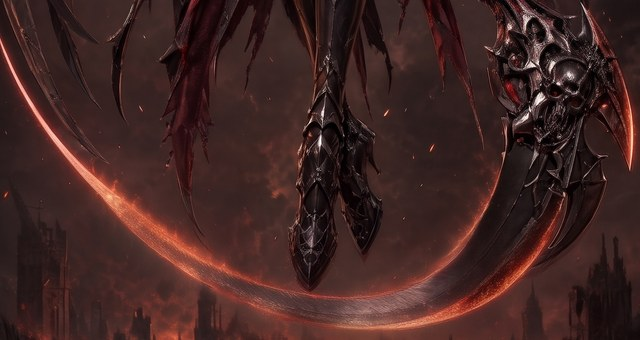
scythe-valkyrie-r4-arc-B-w1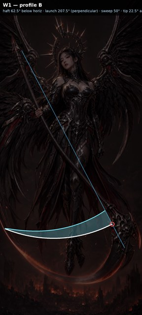
projects/bluemneme/scythe-valkyrie/prompts/r4-w1-cropblade.txt
ATTACHED IMAGES Two images are attached. IMAGE 1 is a CROP from a larger finished photorealistic artwork, showing the scythe blade sweeping across the lower part of the picture. IMAGE 2 is a SHAPE DIAGRAM ONLY: a plain line drawing of the exact blade profile wanted, overlaid on this same artwork. Copy the blade's SHAPE, ANGLE and CURVATURE from IMAGE 2 and nothing else from it — it is a diagram, not artwork; do not copy its lines, colours, dimming, or labels into the result. Your task is a SURGICAL EDIT of IMAGE 1: apply ONLY the corrections listed below and leave everything else untouched. EDIT — ONE BLADE ONLY The scythe carries two nested crescent blades. Remove the outer arc entirely and keep one single continuous blade, restoring the background where the removed arc was. EDIT — BLADE SHAPE Reshape the blade into a shallow reaper crescent. It leaves the ornate head at a RIGHT ANGLE to the shaft, carries outward and slightly downward, then flattens and rises gently so the tip finishes just above horizontal. The whole arc turns only about 50 degrees end to end — a long shallow curve, NOT a hook, NOT a half circle, and it must never curl back up toward a wing. Thick at the head, tapering evenly to a single sharp tip. Keep the blade IN FRONT of the character. PRESERVATION Apart from those edits, reproduce IMAGE 1 EXACTLY: the same figure, cloth, background and lighting, at the same framing on the same canvas shape — do not zoom, crop further, or extend the scene. Add no new objects and no text, labels, logos, or watermarks.
Paints part of the third wing out to flat background first, then asks for the gap to be filled. Round 3 showed that asking in words to remove something failed every time.
scythe-valkyrie-r4-w1-wing-crop-blank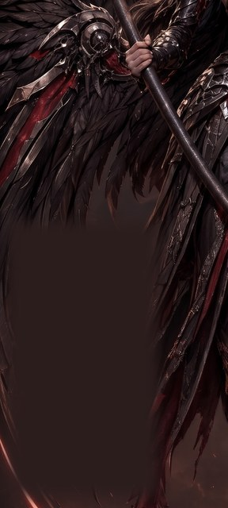
projects/bluemneme/scythe-valkyrie/prompts/r4-w1-blank.txt
ATTACHED IMAGE One image is attached. IMAGE 1 is a CROP from a larger finished photorealistic artwork, showing the left-hand wing area of a winged figure against a dark sky. Part of the image has been PAINTED OUT to a flat blank area. Your task is to fill that blank area in, and to change nothing else. EDIT — FILL THE BLANK AREA Fill the blanked region with the background and scenery that belongs behind it — sky, distant scene, and any cloth that continues into it — matching the surrounding lighting, colour and grain so the join is invisible. Do NOT paint a wing, a limb, a feather, or any part of a figure into that area. It should read as if nothing was ever there. PRESERVE — THE TWO MAIN WINGS The upper wings are correct and must be reproduced exactly as they are. Each is an articulated mechanical limb: an armoured shoulder hub, then a chain of armoured segments linked by visible mechanical joints, whose upper contour forms the wing's top edge with nothing rising above it and the feathers hanging below and behind. Do not redesign, re-pose, resize, or re-render them. PRESERVATION Outside the blanked area, reproduce IMAGE 1 EXACTLY: the same wing, sky, cloth and lighting, at the same framing on the same canvas shape — do not zoom, crop further, or extend the scene. Add no new objects and no text, labels, logos, or watermarks.
Whether a whole-picture pass can tidy the joins of a patched image without undoing the repair.
scythe-valkyrie-r3-w1-rem-2projects/bluemneme/scythe-valkyrie/prompts/r4-w1-clean.txt
ATTACHED IMAGE One image is attached. IMAGE 1 is a finished photorealistic wallpaper artwork of an angel-of-death valkyrie that has been assembled from separately repaired pieces. Your task is to tidy the joins ONLY. EDIT — TIDY THE JOINS Somewhere in this picture, repaired patches meet the original artwork. Find any visible seam, tonal step, blur mismatch or grain mismatch at those joins and blend it away so the picture reads as one continuous render. Change nothing else: every shape, edge and object stays exactly where and as it is. In particular do not redraw the wings, the scythe blade, the shaft, the hands, the face, or the background scene — only reconcile local tone, grain and sharpness across the joins. PRESERVATION Apart from the edits listed above, reproduce IMAGE 1 EXACTLY: the same character, face, expression, hair, halo crown, armour and ornament detail, pose, background, lighting, colour grading, and level of detail, at the same framing on the same tall canvas shape as IMAGE 1. Do not restyle, re-light, sharpen, or reinterpret anything. Add no new objects, no extra glow, and no text, labels, logos, or watermarks.
The same control on the second image.
scythe-valkyrie-r3-w2-all-2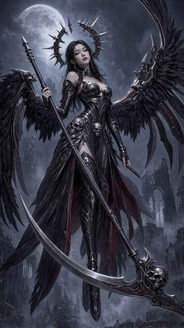
projects/bluemneme/scythe-valkyrie/prompts/r4-w2-ff.txt
ATTACHED IMAGE One image is attached. IMAGE 1 is a finished photorealistic wallpaper artwork of an angel-of-death valkyrie. Your task is a SURGICAL EDIT: apply ONLY the corrections listed below and leave everything else untouched. EDIT — BLADE SHAPE Reshape the blade into a shallow reaper crescent. It leaves the ornate head at a RIGHT ANGLE to the shaft, carries outward and slightly downward, then flattens and rises gently so the tip finishes just above horizontal. The whole arc turns only about 50 degrees end to end — a long shallow curve, NOT a hook, NOT a half circle, and it must never curl back up toward a wing. Thick at the head, tapering evenly to a single sharp tip. Keep the blade IN FRONT of the character. EDIT — CLEAR OF THE WINGS The blade tip currently runs into the dark mass on the VIEWER'S LEFT. Bring the blade clear so visible background separates it from both wings along its whole length. Note that the dark sweeping shape behind her legs is her SKIRT AND CLOAK, not a wing — leave it alone. EDIT — WING TOP EDGE On the VIEWER'S RIGHT wing, several metal blades and spikes rise ABOVE the wing's top edge. Remove everything that projects above that top contour, restoring clean background sky above it. The wing's own jointed segments and everything hanging below the top edge stay exactly as they are. PRESERVE — THE TWO MAIN WINGS The upper wings are correct and must be reproduced exactly as they are. Each is an articulated mechanical limb: an armoured shoulder hub, then a chain of armoured segments linked by visible mechanical joints, whose upper contour forms the wing's top edge with nothing rising above it and the feathers hanging below and behind. Do not redesign, re-pose, resize, or re-render them. PRESERVATION Apart from the edits listed above, reproduce IMAGE 1 EXACTLY: the same character, face, expression, hair, halo crown, armour and ornament detail, pose, background, lighting, colour grading, and level of detail, at the same framing on the same tall canvas shape as IMAGE 1. Do not restyle, re-light, sharpen, or reinterpret anything. Add no new objects, no extra glow, and no text, labels, logos, or watermarks.
The same steered approach on the second image.
scythe-valkyrie-r3-w2-all-2projects/bluemneme/scythe-valkyrie/prompts/r4-w2-sr.txt
ATTACHED IMAGE One image is attached. IMAGE 1 is a finished photorealistic wallpaper artwork of an angel-of-death valkyrie. Redraw this same picture at the same quality. Hold everything named under HOLD CONSTANT exactly as it is, and build the parts named under BUILD to the description given. This is not a light retouch — you are painting the whole picture again — so the HOLD CONSTANT list is what makes it the same artwork. BUILD — WINGS Exactly two wings, one on the viewer's left and one on the viewer's right, and no third wing anywhere. Each is an articulated mechanical limb: an armoured shoulder hub, then a chain of armoured segments linked by visible mechanical joints — upper arm, forearm, and a long outer hand section, like the skeleton of a real bird's wing. The upper contour of that limb chain is the wing's top edge, continuous but bending visibly at each joint, and NOTHING rises above it. Feathers, wing-blades and spikes hang below and behind the limb only. BUILD — SCYTHE One blade only, never two. It leaves the ornate head at a RIGHT ANGLE to the shaft, carries outward and slightly downward, then flattens and rises gently so the tip finishes just above horizontal — the whole arc turning only about 50 degrees end to end. A long shallow crescent, NOT a hook, NOT a half circle, never curling back up into a wing. Visible background separates the blade from both wings along its whole length. The shaft is dead straight, one rigid cylindrical pole with no curve or kink. The blade passes in front of the character. HOLD CONSTANT The same woman, with the same face, expression, hair and skin. The same spiked halo crown. The same armour, its ornament, and the same cloth and skirt. The same floating pose and the same camera. The same background scene, the same lighting and the same colour grading. The same tall canvas shape and framing. No new objects, no extra glow, no text, labels, logos or watermarks.
The blade reshape as a patch, with the shape diagram attached.
scythe-valkyrie-r4-w2-blade-crop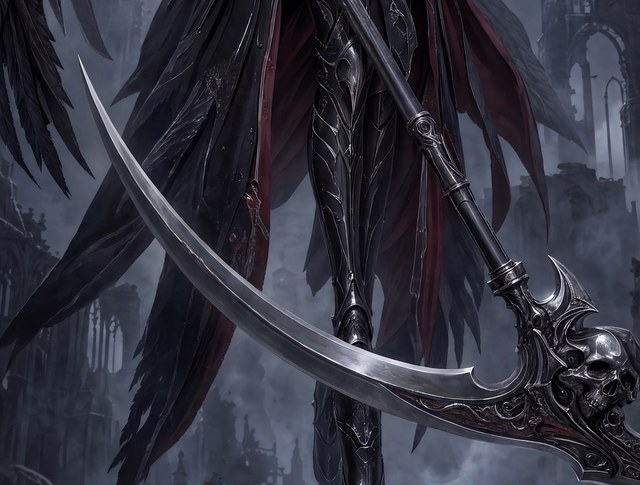
scythe-valkyrie-r4-arc-B-w2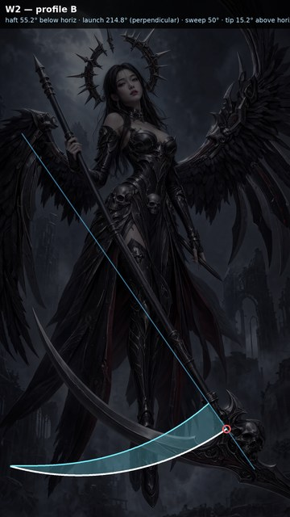
projects/bluemneme/scythe-valkyrie/prompts/r4-w2-cropblade.txt
ATTACHED IMAGES Two images are attached. IMAGE 1 is a CROP from a larger finished photorealistic artwork, showing the scythe blade sweeping across the lower part of the picture. IMAGE 2 is a SHAPE DIAGRAM ONLY: a plain line drawing of the exact blade profile wanted, overlaid on this same artwork. Copy the blade's SHAPE, ANGLE and CURVATURE from IMAGE 2 and nothing else from it — it is a diagram, not artwork; do not copy its lines, colours, dimming, or labels into the result. Your task is a SURGICAL EDIT of IMAGE 1: apply ONLY the corrections listed below and leave everything else untouched. EDIT — BLADE SHAPE Reshape the blade into a shallow reaper crescent. It leaves the ornate head at a RIGHT ANGLE to the shaft, carries outward and slightly downward, then flattens and rises gently so the tip finishes just above horizontal. The whole arc turns only about 50 degrees end to end — a long shallow curve, NOT a hook, NOT a half circle, and it must never curl back up toward a wing. Thick at the head, tapering evenly to a single sharp tip. Keep the blade IN FRONT of the character. EDIT — CLEAR OF THE WINGS The blade tip currently runs into the dark mass on the VIEWER'S LEFT. Bring the blade clear so visible background separates it from both wings along its whole length. Note that the dark sweeping shape behind her legs is her SKIRT AND CLOAK, not a wing — leave it alone. PRESERVATION Apart from those edits, reproduce IMAGE 1 EXACTLY: the same figure, cloth, background and lighting, at the same framing on the same canvas shape — do not zoom, crop further, or extend the scene. Add no new objects and no text, labels, logos, or watermarks.
Removes the spikes rising above the right wing's top edge as a patch, so the mechanism comparison is symmetric across both images.
scythe-valkyrie-r4-w2-wingtop-crop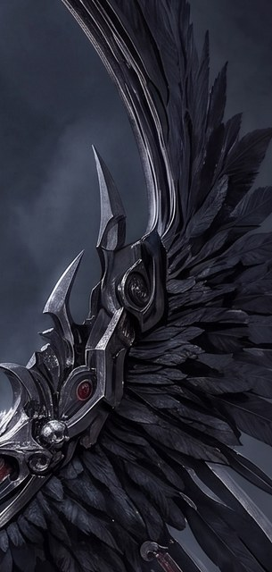
projects/bluemneme/scythe-valkyrie/prompts/r4-w2-cropwing.txt
ATTACHED IMAGE One image is attached. IMAGE 1 is a CROP from a larger finished photorealistic artwork, showing the upper part of a mechanical wing against a night sky. Your task is a SURGICAL EDIT: apply ONLY the correction listed below and leave everything else untouched. EDIT — WING TOP EDGE On the VIEWER'S RIGHT wing, several metal blades and spikes rise ABOVE the wing's top edge. Remove everything that projects above that top contour, restoring clean background sky above it. The wing's own jointed segments and everything hanging below the top edge stay exactly as they are. PRESERVE — THE TWO MAIN WINGS The upper wings are correct and must be reproduced exactly as they are. Each is an articulated mechanical limb: an armoured shoulder hub, then a chain of armoured segments linked by visible mechanical joints, whose upper contour forms the wing's top edge with nothing rising above it and the feathers hanging below and behind. Do not redesign, re-pose, resize, or re-render them. PRESERVATION Apart from that edit, reproduce IMAGE 1 EXACTLY: the same wing, sky and lighting, at the same framing on the same canvas shape — do not zoom, crop further, or extend the scene. Add no new objects and no text, labels, logos, or watermarks.
Whether the editor is the problem. Riverflow made this image originally and is a documented edit specialist; the prompt is held identical to W2-A so only the model differs.
scythe-valkyrie-r3-w2-all-2projects/bluemneme/scythe-valkyrie/prompts/r4-w2-ff.txt
ATTACHED IMAGE One image is attached. IMAGE 1 is a finished photorealistic wallpaper artwork of an angel-of-death valkyrie. Your task is a SURGICAL EDIT: apply ONLY the corrections listed below and leave everything else untouched. EDIT — BLADE SHAPE Reshape the blade into a shallow reaper crescent. It leaves the ornate head at a RIGHT ANGLE to the shaft, carries outward and slightly downward, then flattens and rises gently so the tip finishes just above horizontal. The whole arc turns only about 50 degrees end to end — a long shallow curve, NOT a hook, NOT a half circle, and it must never curl back up toward a wing. Thick at the head, tapering evenly to a single sharp tip. Keep the blade IN FRONT of the character. EDIT — CLEAR OF THE WINGS The blade tip currently runs into the dark mass on the VIEWER'S LEFT. Bring the blade clear so visible background separates it from both wings along its whole length. Note that the dark sweeping shape behind her legs is her SKIRT AND CLOAK, not a wing — leave it alone. EDIT — WING TOP EDGE On the VIEWER'S RIGHT wing, several metal blades and spikes rise ABOVE the wing's top edge. Remove everything that projects above that top contour, restoring clean background sky above it. The wing's own jointed segments and everything hanging below the top edge stay exactly as they are. PRESERVE — THE TWO MAIN WINGS The upper wings are correct and must be reproduced exactly as they are. Each is an articulated mechanical limb: an armoured shoulder hub, then a chain of armoured segments linked by visible mechanical joints, whose upper contour forms the wing's top edge with nothing rising above it and the feathers hanging below and behind. Do not redesign, re-pose, resize, or re-render them. PRESERVATION Apart from the edits listed above, reproduce IMAGE 1 EXACTLY: the same character, face, expression, hair, halo crown, armour and ornament detail, pose, background, lighting, colour grading, and level of detail, at the same framing on the same tall canvas shape as IMAGE 1. Do not restyle, re-light, sharpen, or reinterpret anything. Add no new objects, no extra glow, and no text, labels, logos, or watermarks.
Whether the sharpened spec produces something better from scratch than any repair does. One image each at the two models that won round 1.
Text-only — no image inputs; the prompt below is the whole input.
projects/bluemneme/scythe-valkyrie/prompts/r4-fresh.txt
Photorealistic vertical wallpaper artwork of an original angel-of-death valkyrie, painted for a phone screen in a tall 9:20 shape. BUILD — WINGS Exactly two wings, one on the viewer's left and one on the viewer's right, and no third wing anywhere. Each is an articulated mechanical limb: an armoured shoulder hub, then a chain of armoured segments linked by visible mechanical joints — upper arm, forearm, and a long outer hand section, like the skeleton of a real bird's wing. The upper contour of that limb chain is the wing's top edge, continuous but bending visibly at each joint, and NOTHING rises above it. Feathers, wing-blades and spikes hang below and behind the limb only. BUILD — SCYTHE One blade only, never two. It leaves the ornate head at a RIGHT ANGLE to the shaft, carries outward and slightly downward, then flattens and rises gently so the tip finishes just above horizontal — the whole arc turning only about 50 degrees end to end. A long shallow crescent, NOT a hook, NOT a half circle, never curling back up into a wing. Visible background separates the blade from both wings along its whole length. The shaft is dead straight, one rigid cylindrical pole with no curve or kink. The blade passes in front of the character. BUILD — THE FIGURE A slender adult woman in sleek dark death-valkyrie armour: a sectioned metal skirt over separate leg armour, a modest gap between the chestplate and her throat, long dark hair, mature East Asian features and a calm direct gaze. Above her, a spiked halo crown that is deliberately NOT a full circle — a broken arc with radiating spikes, grimdark and ceremonial. She floats, both feet clear of the ground, in a poised, statuesque and ominous attitude with a pronounced vertical S-curve — a controlled portrait, not a mid-swing action frame. BUILD — SCENE AND PALETTE Quiet ruins and rubble under a smoky, foggy or fiery sky, low in detail and never busy — all the attention stays on her. Dark gunmetal and black surfaces, silver structural framing and edge highlights, restrained red accents. A subtle glow on the blade edge, halo and wing edges is welcome; no flashbangs. EXCLUDE No text, labels, logos, watermarks or signatures. No franchise costume, halo or wing assembly. No staff and no firearm — the scythe is the only prop. Nothing transparent or see-through: every surface is solid and opaque.
Jake's wallpaper, Jake's eye — his pick decides, Dimitri keeps the art gate. Reading notes:
Machine checks run in two lanes:
blind_detect_round.py manifest over the reviewable outputs, judged against spec v0.6. Per the r1–r3 precedent these calls are advisory navigation; the human verdicts decide, and no per-artifact reconciliation is required to close the round.Sign-off on the plan and the cap. Two specific calls are folded in and worth checking before you approve:
Then on the results panel: Jake picks per wallpaper, and delivery follows as a free crop and downscale.
Image generation ≈ $2.48: eighteen flash31 batch calls at 2K (round 3 measured about $0.052 each single-input, so budget $0.065 average for the cells carrying a second image) ≈ $1.17; one riverflow25 edit ≈ $0.37 (round 1 measured $0.372, well above the catalog's $0.15 — the higher figure is used here); and two fresh generations, one gptimage2 at ≈ $0.57 and one riverflow25 at ≈ $0.37, ≈ $0.94. FAST evaluation is unmetered. SLOW evaluation reserves $1.10 (≥$0.05 × 22 reviewable outputs, the skill's floor). The crops, the blanking, the composites, the metric battery, the hand repair and any delivery downscale are free local steps. Planned total ≈ $3.58. Approved round cap $5.00 USD (Dimitri, 2026-08-13), no Meshy credits — the headroom covers conservative in-flight reservations, not extra work. Live provider metadata and the detector's printed preflight ceiling remain authoritative at execution time.
scythe-valkyrie-r3-w1-rem-2 (Dimitri's W1 base) and scythe-valkyrie-r3-w2-all-2 (Jake's W2 base); the chosen blade-shape diagrams scythe-valkyrie-r4-arc-B-w1 and scythe-valkyrie-r4-arc-B-w2; spec v0.6; the committed prompts/r4-*.txt filesgenerated/: scythe-valkyrie-r4-w{1,2}-{ff,sr,cropblade,...}-N, the crop cells' pasted-back composites, and scythe-valkyrie-r4-fresh-{gptimage2,riverflow25}-1claude/scythe-valkyrie-r4-wallpaper-editsprompts, matrix, commands (pipeline detail)
rounds.md.prompts/r4-*.txt, generated from single-sourced shared blocks by the committed prompts/r4-compose.py. The blade-shape paragraph is byte-identical across all four arms that carry it, the wing-construction paragraph across all three that carry it, and the hold-constant block across both steered arms — true by construction rather than by hand-checking, and verifiable by re-running the composer. The W2 riverflow arm reuses r4-w2-ff.txt unchanged, which is the point of that comparison. The hand repair reuses r3's proven r3-w2-dagger.txt.tools/region_edit.py (crop → edit → feather-composite back, generalising the r3 dagger recipe) and tools/edit_diff.py (the metric battery).| # | Source / base (input) | Prompt | Out stem (output) | Rolls | Wave |
|---|---|---|---|---|---|
| 1 | r3-w1-rem-2 (1 image, declared) | prompts/r4-w1-ff.txt | scythe-valkyrie-r4-w1-ff | 2 | 1 |
| 2 | r3-w1-rem-2 (1 image, declared) | prompts/r4-w1-sr.txt | scythe-valkyrie-r4-w1-sr | 2 | 1 |
| 3 | r4-w1-wing-crop (1 image, declared) | prompts/r4-w1-cropwing.txt | scythe-valkyrie-r4-w1-cropwing | 2 | 1 |
| 4 | r4-w1-blade-crop + r4-arc-B-w1 (2 images, declared) | prompts/r4-w1-cropblade.txt | scythe-valkyrie-r4-w1-cropblade | 2 | 1 |
| 5 | r4-w1-wing-crop-blank (1 image, declared) | prompts/r4-w1-blank.txt | scythe-valkyrie-r4-w1-blank | 2 | 1 |
| 6 | r3-w2-all-2 (1 image, declared) | prompts/r4-w2-ff.txt | scythe-valkyrie-r4-w2-ff | 2 | 1 |
| 7 | r3-w2-all-2 (1 image, declared) | prompts/r4-w2-sr.txt | scythe-valkyrie-r4-w2-sr | 2 | 1 |
| 8 | r4-w2-blade-crop + r4-arc-B-w2 (2 images, declared) | prompts/r4-w2-cropblade.txt | scythe-valkyrie-r4-w2-cropblade | 2 | 1 |
| 9 | r4-w2-wingtop-crop (1 image, declared) | prompts/r4-w2-cropwing.txt | scythe-valkyrie-r4-w2-cropwing | 1 | 1 |
| 10 | r3-w2-all-2 (1 image, declared; riverflow25) | prompts/r4-w2-ff.txt | scythe-valkyrie-r4-w2-ffriver | 1 | 1 |
| 11 | text only; no images (gptimage2) | prompts/r4-fresh.txt | scythe-valkyrie-r4-fresh-gptimage2 | 1 | 1 |
| 12 | text only; no images (riverflow25) | prompts/r4-fresh.txt | scythe-valkyrie-r4-fresh-riverflow25 | 1 | 1 |
| 13 | best assembled W1 composite (1 image, selected after wave 1) | prompts/r4-w1-clean.txt | scythe-valkyrie-r4-w1-clean | 1 | 2 |
Rows 1–8 plan two same-stem rolls each; rolls append and never overwrite. Rows 9–12 are single rolls. 21 paid calls total, reconciling with the choices table. Row 13 is the only dependent cell: it waits for wave 1 and is skipped and recorded as skipped if no arm produces a composite worth cleaning — no substitute input.
Same-stem rolls keep this round outside coordinator v1, as in r2 and r3: each two-roll stem runs as one gemini_gen.py --rolls 2 invocation with native --resume-run recovery. The two riverflow and one gptimage2 cells are synchronous providers with no resumable task id, so a missing output after the wrapper starts is an ambiguous manual stop — reconcile in rounds.md before any retry, per the skill.
Cut at plan time and registered in lineage.json: r4-w1-wing-crop (0,940,620,2320 of r3-w1-rem-2), r4-w1-wing-crop-blank (that crop with (20,600)-(430,1350) filled with the sampled background tone through an 18px-feathered mask), r4-w1-blade-crop (0,2050,1376,2780), r4-w2-blade-crop (0,1500,1400,2560), and r4-w2-wingtop-crop (1120,60,1520,900 of r3-w2-all-2). Every patch arm's output is composited back into its full-size original by tools/region_edit.py; the hand repair re-runs r3's r3-w2-dagger.txt recipe on the winner's own hand region, last.
These cost nothing and may change the matrix, so they run first and their results are recorded in rounds.md:
projects/bluemneme/scythe-valkyrie/prompts/r3-w1-rem.txt
ATTACHED IMAGE One image is attached. IMAGE 1 is a finished photorealistic wallpaper artwork of an angel-of-death valkyrie. Your task is a SURGICAL EDIT: apply ONLY the corrections listed below and leave everything else untouched. EDIT — BLADE COUNT The scythe must have exactly ONE blade. In IMAGE 1 a second, parallel blade arc splits off below the main blade as it rises toward the ornate skull head on the lower VIEWER'S RIGHT. Remove the extra arc and close the gap so the weapon carries ONE single continuous blade, with the surrounding background restored where the extra arc was. EDIT — WING TOPS Feather tufts stick UP above the mechanical wing joints at the top of the wings. Remove every feather ABOVE the mechanical joints on both wings, restoring clean background sky above each joint. Feathers belong only BELOW and BEHIND the mechanical joint line; the joints themselves and the wings below them stay exactly as they are. PRESERVATION Apart from the edits listed above, reproduce IMAGE 1 EXACTLY: the same character, face, expression, hair, halo crown, armour and ornament detail, pose, wings, scythe, background, lighting, colour grading, and level of detail, at the same framing on the same tall canvas shape as IMAGE 1. Do not restyle, re-light, sharpen, or reinterpret anything. Add no new objects, no extra glow, and no text, labels, logos, or watermarks.
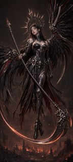
projects/bluemneme/scythe-valkyrie/prompts/r3-w1-rem.txt
ATTACHED IMAGE One image is attached. IMAGE 1 is a finished photorealistic wallpaper artwork of an angel-of-death valkyrie. Your task is a SURGICAL EDIT: apply ONLY the corrections listed below and leave everything else untouched. EDIT — BLADE COUNT The scythe must have exactly ONE blade. In IMAGE 1 a second, parallel blade arc splits off below the main blade as it rises toward the ornate skull head on the lower VIEWER'S RIGHT. Remove the extra arc and close the gap so the weapon carries ONE single continuous blade, with the surrounding background restored where the extra arc was. EDIT — WING TOPS Feather tufts stick UP above the mechanical wing joints at the top of the wings. Remove every feather ABOVE the mechanical joints on both wings, restoring clean background sky above each joint. Feathers belong only BELOW and BEHIND the mechanical joint line; the joints themselves and the wings below them stay exactly as they are. PRESERVATION Apart from the edits listed above, reproduce IMAGE 1 EXACTLY: the same character, face, expression, hair, halo crown, armour and ornament detail, pose, wings, scythe, background, lighting, colour grading, and level of detail, at the same framing on the same tall canvas shape as IMAGE 1. Do not restyle, re-light, sharpen, or reinterpret anything. Add no new objects, no extra glow, and no text, labels, logos, or watermarks.
(no prompt recorded)
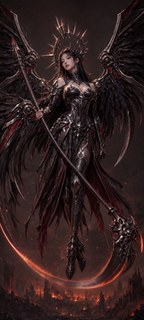
(no prompt recorded)
(no prompt recorded)
(no prompt recorded)
projects/bluemneme/scythe-valkyrie/prompts/r3-w1-rem.txt
ATTACHED IMAGE One image is attached. IMAGE 1 is a finished photorealistic wallpaper artwork of an angel-of-death valkyrie. Your task is a SURGICAL EDIT: apply ONLY the corrections listed below and leave everything else untouched. EDIT — BLADE COUNT The scythe must have exactly ONE blade. In IMAGE 1 a second, parallel blade arc splits off below the main blade as it rises toward the ornate skull head on the lower VIEWER'S RIGHT. Remove the extra arc and close the gap so the weapon carries ONE single continuous blade, with the surrounding background restored where the extra arc was. EDIT — WING TOPS Feather tufts stick UP above the mechanical wing joints at the top of the wings. Remove every feather ABOVE the mechanical joints on both wings, restoring clean background sky above each joint. Feathers belong only BELOW and BEHIND the mechanical joint line; the joints themselves and the wings below them stay exactly as they are. PRESERVATION Apart from the edits listed above, reproduce IMAGE 1 EXACTLY: the same character, face, expression, hair, halo crown, armour and ornament detail, pose, wings, scythe, background, lighting, colour grading, and level of detail, at the same framing on the same tall canvas shape as IMAGE 1. Do not restyle, re-light, sharpen, or reinterpret anything. Add no new objects, no extra glow, and no text, labels, logos, or watermarks.
projects/bluemneme/scythe-valkyrie/prompts/r3-w2-all.txt
ATTACHED IMAGE One image is attached. IMAGE 1 is a finished photorealistic wallpaper artwork of an angel-of-death valkyrie. Your task is a SURGICAL EDIT: apply ONLY the corrections listed below and leave everything else untouched. EDIT — FREE HAND Her free hand on the VIEWER'S RIGHT, beside her hip, has a small extra dagger-like blade threaded between the fingers — it has no handle and attaches to nothing. Remove that blade completely, and move the hand onto the scythe haft where the haft passes beside her upper thigh on the VIEWER'S RIGHT: a natural, unmistakable five-fingered wrap around the haft, thumb visible, so she holds the scythe TWO-HANDED with the grips widely separated. Keep the arm's shoulder-to-hand anatomy unbroken and natural. EDIT — WAIST SKULL The small sculpted skull ornament on her armour near the waist shows THREE eye sockets in a row. Redraw it as a normal skull with exactly TWO eye sockets, keeping its size, position, and material. EDIT — FLOATING SHARD A small, sharp, shiny metal fragment floats alone in the foggy gap on the VIEWER'S LEFT between the lower wing and her skirt, connected to nothing. Remove it completely and fill the area with the surrounding fog. EDIT — BLADE SHAPE Reshape the scythe blade into a proper reaper-scythe blade: exactly ONE long crescent with smooth, CONSISTENT curvature from the ornate skull head on the lower VIEWER'S RIGHT to a single sharp tip toward the lower VIEWER'S LEFT, thick at the head and tapering evenly along its whole length. Keep the blade IN FRONT of the character, and keep it clearly SEPARATE from the wings: visible background must remain between the blade tip and the long wing feathers on the VIEWER'S LEFT — the blade must never touch, join, or continue into a wing. EDIT — WING TOPS Stray blade elements stick UP above the mechanical wing joints at the top of the wings, most visibly on the VIEWER'S RIGHT wing. Remove the stray blade elements ABOVE the mechanical joints, restoring clean sky and fog above each joint. Wing-blades and feathers belong only BELOW and BEHIND the mechanical joint line; the joints themselves and the wing structure below them stay exactly as they are. PRESERVATION Apart from the edits listed above, reproduce IMAGE 1 EXACTLY: the same character, face, expression, hair, halo crown, armour and ornament detail, pose, wings, scythe, background, lighting, colour grading, and level of detail, at the same framing on the same tall canvas shape as IMAGE 1. Do not restyle, re-light, sharpen, or reinterpret anything. Add no new objects, no extra glow, and no text, labels, logos, or watermarks.

projects/bluemneme/scythe-valkyrie/prompts/r3-w2-all.txt
ATTACHED IMAGE One image is attached. IMAGE 1 is a finished photorealistic wallpaper artwork of an angel-of-death valkyrie. Your task is a SURGICAL EDIT: apply ONLY the corrections listed below and leave everything else untouched. EDIT — FREE HAND Her free hand on the VIEWER'S RIGHT, beside her hip, has a small extra dagger-like blade threaded between the fingers — it has no handle and attaches to nothing. Remove that blade completely, and move the hand onto the scythe haft where the haft passes beside her upper thigh on the VIEWER'S RIGHT: a natural, unmistakable five-fingered wrap around the haft, thumb visible, so she holds the scythe TWO-HANDED with the grips widely separated. Keep the arm's shoulder-to-hand anatomy unbroken and natural. EDIT — WAIST SKULL The small sculpted skull ornament on her armour near the waist shows THREE eye sockets in a row. Redraw it as a normal skull with exactly TWO eye sockets, keeping its size, position, and material. EDIT — FLOATING SHARD A small, sharp, shiny metal fragment floats alone in the foggy gap on the VIEWER'S LEFT between the lower wing and her skirt, connected to nothing. Remove it completely and fill the area with the surrounding fog. EDIT — BLADE SHAPE Reshape the scythe blade into a proper reaper-scythe blade: exactly ONE long crescent with smooth, CONSISTENT curvature from the ornate skull head on the lower VIEWER'S RIGHT to a single sharp tip toward the lower VIEWER'S LEFT, thick at the head and tapering evenly along its whole length. Keep the blade IN FRONT of the character, and keep it clearly SEPARATE from the wings: visible background must remain between the blade tip and the long wing feathers on the VIEWER'S LEFT — the blade must never touch, join, or continue into a wing. EDIT — WING TOPS Stray blade elements stick UP above the mechanical wing joints at the top of the wings, most visibly on the VIEWER'S RIGHT wing. Remove the stray blade elements ABOVE the mechanical joints, restoring clean sky and fog above each joint. Wing-blades and feathers belong only BELOW and BEHIND the mechanical joint line; the joints themselves and the wing structure below them stay exactly as they are. PRESERVATION Apart from the edits listed above, reproduce IMAGE 1 EXACTLY: the same character, face, expression, hair, halo crown, armour and ornament detail, pose, wings, scythe, background, lighting, colour grading, and level of detail, at the same framing on the same tall canvas shape as IMAGE 1. Do not restyle, re-light, sharpen, or reinterpret anything. Add no new objects, no extra glow, and no text, labels, logos, or watermarks.
(no prompt recorded)

(no prompt recorded)
(no prompt recorded)
projects/bluemneme/scythe-valkyrie/prompts/r3-w2-all.txt
ATTACHED IMAGE One image is attached. IMAGE 1 is a finished photorealistic wallpaper artwork of an angel-of-death valkyrie. Your task is a SURGICAL EDIT: apply ONLY the corrections listed below and leave everything else untouched. EDIT — FREE HAND Her free hand on the VIEWER'S RIGHT, beside her hip, has a small extra dagger-like blade threaded between the fingers — it has no handle and attaches to nothing. Remove that blade completely, and move the hand onto the scythe haft where the haft passes beside her upper thigh on the VIEWER'S RIGHT: a natural, unmistakable five-fingered wrap around the haft, thumb visible, so she holds the scythe TWO-HANDED with the grips widely separated. Keep the arm's shoulder-to-hand anatomy unbroken and natural. EDIT — WAIST SKULL The small sculpted skull ornament on her armour near the waist shows THREE eye sockets in a row. Redraw it as a normal skull with exactly TWO eye sockets, keeping its size, position, and material. EDIT — FLOATING SHARD A small, sharp, shiny metal fragment floats alone in the foggy gap on the VIEWER'S LEFT between the lower wing and her skirt, connected to nothing. Remove it completely and fill the area with the surrounding fog. EDIT — BLADE SHAPE Reshape the scythe blade into a proper reaper-scythe blade: exactly ONE long crescent with smooth, CONSISTENT curvature from the ornate skull head on the lower VIEWER'S RIGHT to a single sharp tip toward the lower VIEWER'S LEFT, thick at the head and tapering evenly along its whole length. Keep the blade IN FRONT of the character, and keep it clearly SEPARATE from the wings: visible background must remain between the blade tip and the long wing feathers on the VIEWER'S LEFT — the blade must never touch, join, or continue into a wing. EDIT — WING TOPS Stray blade elements stick UP above the mechanical wing joints at the top of the wings, most visibly on the VIEWER'S RIGHT wing. Remove the stray blade elements ABOVE the mechanical joints, restoring clean sky and fog above each joint. Wing-blades and feathers belong only BELOW and BEHIND the mechanical joint line; the joints themselves and the wing structure below them stay exactly as they are. PRESERVATION Apart from the edits listed above, reproduce IMAGE 1 EXACTLY: the same character, face, expression, hair, halo crown, armour and ornament detail, pose, wings, scythe, background, lighting, colour grading, and level of detail, at the same framing on the same tall canvas shape as IMAGE 1. Do not restyle, re-light, sharpen, or reinterpret anything. Add no new objects, no extra glow, and no text, labels, logos, or watermarks.